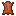
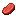
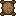
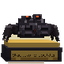

Thornhorn
No. 1A grazer that leaves you alone until one of the herd is hurt. Then they all turn on you.
- Home
- Plains and meadows, in herds.
- Tell
- It lowers its horns and paws the ground for a second.
- Counter
- Step aside when it charges. If it runs into a wall it is stunned for three seconds and takes half again as much damage.
- Looks
- Thornhorn and Sunflower
- Charm
- Shellward Charm
- Health
- 24
- Attack
- 5
- Armor
- 2
Drops

Leather ×0–2 (+0–1 per Looting level)
Raw Beef ×1–3 (+0–1 per Looting level)
Tough Hide ×1 (+0–1 per Looting level)
Trophy (2.5%, +1% per Looting level, from a player's kill)